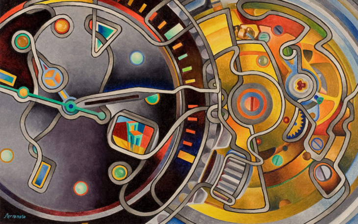

Nestor Ferronato My relationship with time is frantic – it’s never enough for me
Argentinian painter Néstor Ferronato has worked in Italy since 1985 where he lives by puntualità svizzera or Swiss punctuality. Not only is he never late, he actually arrives well in advance of any appointments.
„My relationship with time is frantic — it’s never enough for me,” - he says „I wouldn’t waste it ever. If I could, I’d rather avoid sleeping, since we pass years doing that.”
Fascinated by the mechanisms of watches and clocks, Néstor started to make them his subjects.
“I am obsessed with time passing by,” he says, “but I never desired to become a watchmaker. Maybe that was a mistake as I’d probably be more wealthy by now!”
He’s been intrigued by the inner workings of things since he was small. As a boy he would take apart his toys
“I was trying to figure out what was making my tin-monkey move its arms and legs at the same time,” he says. “I wanted to understand why, pressing my toy car down while dragging it back, at my release it rushed forward like a rocket.”
He began painting looping ribbons moving in and out of the watch parts.
The ribbons symbolize the dynamism of the mechanical movement of a watch, a visual metaphor for “the heart that makes the watch tick and the movements and complications that give it rhythm.”
Recently though Néstor has stopped using this technique so that other patterns in the watches can become more visible. In these “post-ribbons” as he calls them, Néstor hides people and objects within the watch workings for viewers to find. So in Prosit Breguet you can spot a glass of red wine held by a hand between the yellow gear on the right and the support plate where the logo is read. Above the wine glass two Breguet technicians look back at the viewer, keen to see how their craftsmanship is being appreciated.

Photos
- Nestor Ferronato – Rolex with chair
- Nestor Ferronato – Breguet 22 - Rue Vivienne
- Nestor Ferronato – Swizzerland